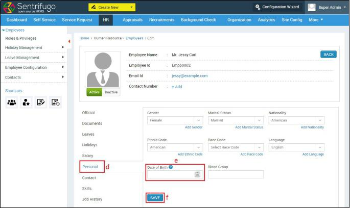

Dashboard
Sentrifugo’s dashboard enables you to have all the information you need at a glance. You can decide what elements you need on the dashboard by configuring widgets. You can also view announcements and your colleagues’ upcoming birthday.
How do I add Widgets?
You can configure your widgets on your dashboard using the below methods:
- Click the organization logo on the top left corner (This will take you to the dashboard from any other screen)
- Click on the Click here link at the center of the dashboard
Or
- Click the logged in user’s name in the top right corner
- Click Settings in the dropdown
Or
- Click the Gear icon in the bottom left corner
(Common for all)
- Click Widgets button in the settings page
- Drag and drop the selected menu item(s) in the widgets box
- Click SAVE button to add Widgets in the Widgets pane
How do I add Shortcuts?
You can configure your shortcuts on your dashboard using the below methods:
- Click the organization logo on the top left corner (This will take you to the dashboard from any other screen)
- Click on the Click here link at the center of the dashboard
Or
- Click the logged in user’s name in the top right corner
- Click Settings in the dropdown
Or
- Click the Gear icon in the bottom left corner
(Common for all)
- Click Shortcuts button in the settings page
- Drag and drop the selected menu item(s) in the widgets box
- Click SAVE button to add Shortcuts in the Shortcuts pane
This is how your widgets and shortcuts will appear on the dashboard after you’ve saved them, refer the image below:

Click cancel to exit the Widgets/Shortcuts.
How do I add Announcements?
Announcements can be created by the Super Admin, Management & HR. The announcements will appear on every user’s dashboard.
- Click Organization in the top menu
- Click Announcements on the left menu panel
- Click +Add button on the right side
- Select the Business Unit(s), Department and Title
- Upload Attachment if required
- Click Post button to publish the announcements
How do I add Birthday Announcements?
Birthday updates will be displayed if it’s any employee’s birthday on that particular date.
To add an employee’s birthday:
- Click HR in the top menu
- Click More Actions icon
- Click Edit icon against any employee’s name

- Click Personal menu option on the left menu panel (left side of the form)
- Enter the birth date in the ‘Date of Birth’ field
- Click SAVE button
Once the birth dates of employees have been added, a birthday announcement will be displayed on their birthdays.

Only the Super Admin and Organization Head can view every employee’s birthday announcement. Others can only view birthday announcements of employees in the same department as them.